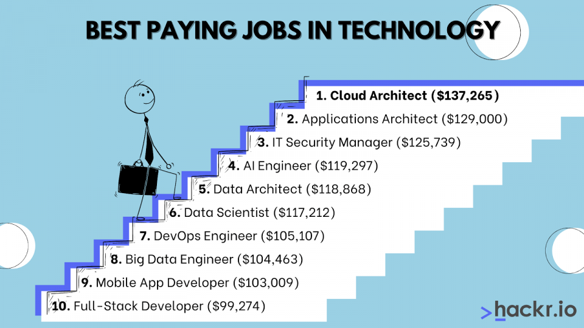

Achievments
There are many achievments that I have encountered in my years at college and highschool, which makes me proud of who I have become
- All A Honor Roll
- Deans List Made
- Certified Training Completed in I.T
- Bilingual
Career
I recently graduated highschool in 2021 and am looking to launch my career in the real world.
- Full-time Student at Grand Valley State University
- I.T volunteer support at Hesperia Highschool
- Walmart Associate
Goals
I have a lot of goals in my career that I am looking forward too!
- Graduate Grand Valley State University with a bachelors degree.
- Start working on internships dealing with my career field
- Consistent Support and Motivation to helo others having trouble or pursuing a career in Information Technology.
Profile
The following are common hobbies I enjoy doing on my spare time
- Sports
- I love watching and playing sports. Throughout my highschool career I played football, basketball, and baseball. I obtained All-Conference in all of those sports and was selected All-State in baseball. I also enjoy watching all these sports from home on telivision.
- Video Games
- Also on my spare time, I love playing various video games like madden, call of duty, or nba 2k.
- Coaching
- A big hobby I got into recently is being an assistant coach on various teams for all kinds of sports. I have a passion for sports and love teaching the game to the new era of kids.